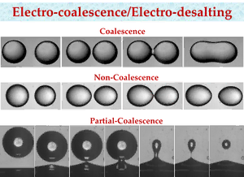

The coalescence of water drops, dispersed in oil, is critical to the destabilization of a water-in-oil emulsion under an electric field. In this work, we determine the conditions for coalescence or non-coalescence of two aqueous water drops that are suspended in an insulating oil and subjected to a uniform electric field. Drop–interface interaction under an electric field is relevant in commercial desalters wherein water droplets suspended in oil coalesce under an electric field, move down under gravity, and eventually coalesce with the water pool at the bottom of the desalter.